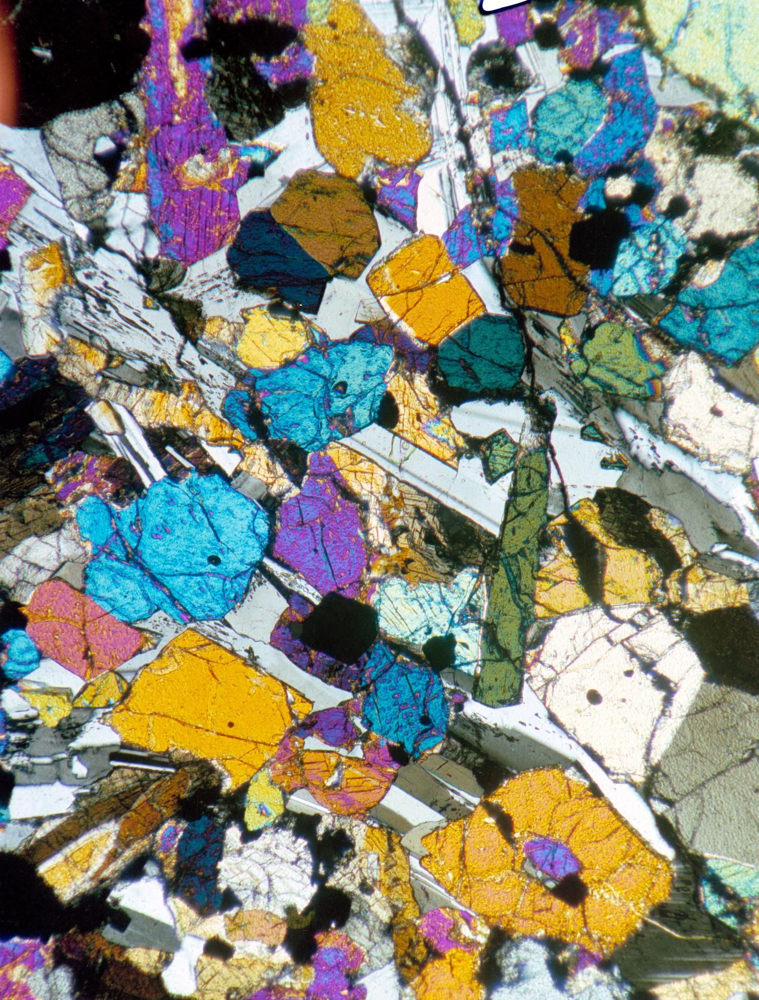

Part 2: Minerals, Rocks and Plates · Chapter 5 of 15
The World of Crystals
Rocks are made of minerals, and minerals are made of crystals.

Almost all rocks are mixtures of minerals. A mineral is a naturally formed solid with a definite chemical make-up and an ordered internal structure: its atoms are stacked in a regular, repeating pattern called a crystal lattice. That pattern controls the mineral's shape, hardness and the way it breaks.
The crust's building blocks
Just two elements, oxygen (about 46 per cent by mass) and silicon (about 28 per cent), make up roughly three-quarters of the Earth's crust. Not surprisingly, the most common minerals are silicates, built around a unit of one silicon atom surrounded by four oxygen atoms. Feldspars are the most abundant silicate group; quartz (silicon dioxide) is another very common one. Granite, for instance, is mostly feldspar and quartz with a little dark mica.
Some rocks are made almost entirely of a single mineral. Limestone and chalk are mostly calcite (calcium carbonate), and rock salt is halite. Others contain valuable metals: an ore is a rock rich enough in a metal to be worth mining, such as galena for lead.
Seeing crystals
Most mineral grains are tiny. To identify them, geologists grind a slice of rock until it is about 0.03 mm thick, a thin section that light can pass through, and examine it under a microscope between two polarizing filters set at right angles. Each mineral changes the light in its own way, so the grains light up in characteristic colours.
You can try a simple version at home. Hold one pair of polarized sunglasses in front of another and rotate it until the light almost disappears. Put a piece of clear sticky tape or a crumpled plastic wrapper between them, and it will glow with colours.
Key terms
- atom
- The tiniest particle of an element that can exist.
- compound
- A substance made of two or more elements joined together chemically.
- mineral
- A natural crystalline chemical. Rocks are made up of minerals.
- crystal
- A solid whose atoms are fixed together in a regular, repeating pattern.
- silicate
- A mineral made of oxygen and silicon, often joined with metals. Silicates are the largest group of minerals.
- quartz
- A very common silicate mineral, made of silicon and oxygen. Its crystals are often clear or milky.
- calcite
- The mineral that chalk is made of, almost entirely.
- feldspar
- A common group of silicate minerals. Granite is a mixture of feldspar, quartz and other minerals.
- ore
- A rock or mineral from which a useful metal can be extracted.
- thin section
- A slice of rock ground so thin that light shines through it. Geologists study it under a microscope with crossed polarizers.
Check your understanding
Think of your answer, then open each question to compare.
Which two elements make up about three-quarters of the crust?
Oxygen and silicon.
What makes a mineral a crystal?
Its atoms are arranged in a regular, repeating pattern.
Why do geologists use polarizing filters on a microscope?
Each mineral changes polarized light in a characteristic way, which helps identify it.